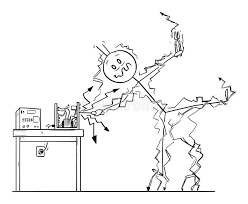
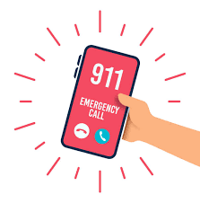
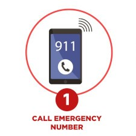
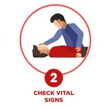
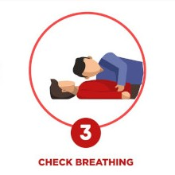
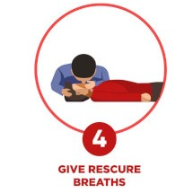
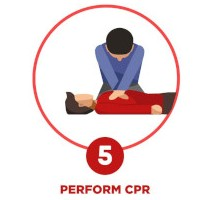

Qka te bejme kur nje njeri goditet nga rryma elektrike
Goditja nga rryma elektrike mund te jete shume e rrezikshme dhe ne disa raste mund te jete fatale. Kur nje njeri goditet nga rryma elektrike, eshte e rendesishme te veprohet shpejt dhe me kujdes per te siguruar ndihmen e pare dhe per te parandaluar demtime te metejshme dhe te thirret ndihma e shpejt.
 Ndihma e pare eshte me e rendesishme ne momentit qe ndodhin goditja sepse e ndihmon te mbijeton dhe nuk duhemi te heqim dore asnje here deri sa te wije ndihma e shpejt sepse nese themi se vetem eshte vdekur atehere shumeshpesh kjo do te ishte rreme sepse vetem mjeku mund te shoh nese eshte vdekur apo jo dhe deri ate kohe nese do te ishte pa ndihmen e pare athere ka shume mundesi qe do te vdiste.
Ndihma e pare, si te bejme
ndihma e pare behet lehte dhe mund te mesohet nga te gjithe dhe behet me se lehti ne 6 hapa
hapi i pare
thirre ndihmen e shpejt
hapi i dyte
kontrolloni shenjat vitale te shikosh nese eshte mire apo jo
hapi i trete
kontrolloni frymëmarrjen qe te shih nese eshte duke marrur fryme apo jo
hapi i katert
jepni frymë shpëtimi qe te kete fryme qe te jetoj dhe mos hiqni dore
hapi i peste
kryej cpr
hapi i gjashte

rrotullojeni ne nje ane
Permbledhje
Kur gotitet dikush nga rryma elektrike duhesh ta hekesh ate nag burimi i rrymes elektrike ,te thirresh nidhmen e shpejt dhe te jepesh ndihmen e pare ne te cilen duhet te jete e shpejt.nuk duhemi te hiqem dore edhe nese duket si eshte vdekur sepse vetem mjeku mund te dije nese ka vdekur dhe kur te vije ne vete te jepesh nje batanije to ngrohte dhe pije te ngrohte
Kryesore
Goditja nga rryma elektrike eshte nje situate emergjente qe kerkon veprim te shpejte dhe te sakte. Te gjitha hapat e ndihmes se pare duhet te ndiqen me kujdes dhe profesionalizem. Ne rast se nuk jeni te sigurt se si te veproni, thirreni ndihmen e shpejte dhe ndiqni udhezimet e tyre.